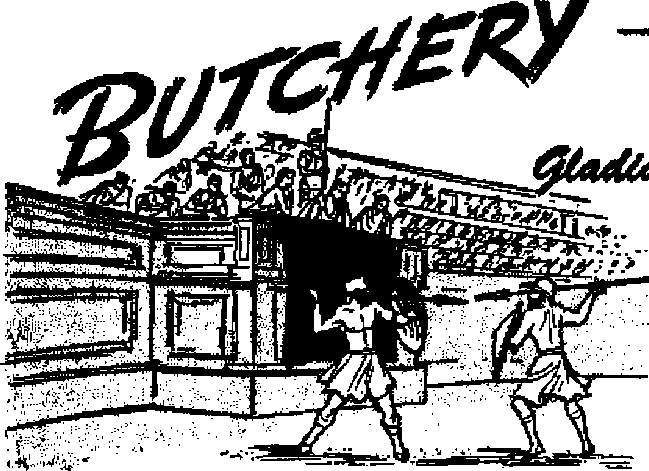

It depends on you
Problem of peace between races to be solved by science?
Projecting the effect of hypnosis into the future
Gladiators slaughtered in a lust for blood
THE MISSION OF THIS JOURNAL
New* sources that are able to keep you awake to the vital issues of our times must be unfettered by censorship and selfish interests. “Awake!” has no fetters. It recognizes facts, faces facts, is free to publish facts. It is not hound by political ambitions or obligations; it is unhampered by advertisers whose toes must not be trodden on; it is unprejudiced by traditional creeds. This journal keeps itself free that it may speak freely to you. But it does not abuse its freedom. It maintains integrity to truth,
“Awake!” uses the regular news channels, but is not dependent on them. Its own correspondents are on all continents, In scores of nations. From the four corners of the earth their uncensored, on>the-scenes reports come io you through these columns. This journal's viewpoint is not narrow, but is international. It is read in many nations, in many languages, by persons of all ages. Through its pages many fields of knowledge pass in review—government, commerce, religion, history, geography, science, social conditions, natural wonders—why, its cover* age is as broad as the earth and as high as the heavens.
“Awake 1” pledges itself to righteous principles, to exposing hidden foes and subtle dangers, to championing freedom for all, to comforting mourners and strengthening those disheartened by the failures of a delinquent world, reflecting sure hope for the establishment of a right* eous New World.
Get acquainted with “Awake!” Keep awake by reading “Awake!”
Published semimonthly by WATCHTOWER BIBLE AND TRACT SOCIETY, INC.
117 Adams Street Brooklyn 1, N. Y., U.S.A.
N. H. Knobh, President Grant Suites, Secretory
Printing tftte fe»u«: 1,000,000
Ltniiwi In whlck the emuIm 1i tikllihtt: Semimonthly—AM kauris, Engllih, Finnish, French, Orrnao, Htitatidlgb, Nwwt^ian, Spanish, Swedish. Monthly.—Danish, Cr«k, Portuguese, Ukrainian,
Offices Poorly EUliscrtptftin Rato
Arpsrlti, U.S., 117 Adams &t., Brooklyn 1, N.Y, H AmtriHt, 11 Beresford Rd., Rtrathficld, N.B.W. 8s Cuiifi, 40 Irwin Ave., Toronto 5, OtitAflo England, 34 Craven Terrace, London, W 2 SMth Africa, Private Bag, P.O. Elandirfonteln,
Five a eepy
Reoilttaheos should be seat to office In your coun* try In compliance with rrsalidcns to guarantee jtafe ddbcry of money. Remittances are accepted at Brooklyn from countries where no office Is located, by international ramty enter only. Buhscrtptton rates in different countries are here stated In local currency, flatloe of expiration (with renewal blank) ta gent at least two issues before subscription ex-
?s ptrcs. Change of nddrtia when sent tn our office may be expected effective within one month, Send your old as well ag new address.
Transvaal 7s
Entered as wcond-class matter at Brooklyn, N. Y
Act <tf Match 3, 1879. Printed In U. B. A
CONTENTS
|
Science Sows a Sinister Seed |
3 |
Delay Tooth Decay! |
17 |
|
Hypnotic Hangovers |
5 |
Passengers Get New Thrill |
19 |
|
Autosuggestion |
7 |
The Horseless Carriage |
20 |
|
Myth of the Stork |
8 |
Butchery, a Colossal Roman Idol |
21 |
|
Mayas—Memento of the Past |
9 |
Ancient Wisdom |
24 |
|
New York to Have Water for All |
12 |
“Your Word Is Truth" | |
|
Hatred—Friend or Foe? |
13 |
Who Will Have a Resurrection? |
25 |
|
Directing Hate and Anger |
15 |
Jehovah's Witnesses Preach | |
|
“Perfect Hatred” |
16 |
in All the Earth—Sweden |
27 |
|
Sensational Archaeological Discovery |
16 |
Watching the World |
29 |
"Now it is high time to awake”— Romans 13:11 &
Volum* XXMIV Sroekryn, «. v,( July 22,1M3 Num Mr U
Science Sows a Sinister Seed
SCIENCE'S professed objective is the welfare of mankind. Strange, then, that one hears a popular question, Does the steam roller of science that was to flatten out all our problems have a Frankenstein in the driver's seat, since now science threatens to flatten out mankind? True, in a feeble way science has prolonged man's life, but at the same time it has made living more dlUlcult, if not hair-raising. In World War I science was the ghoulish chemist glaring over a test tube, and other people walked around in gas masks. During World War IT science was the white-robed physicist at the cyclotron who, after enormous efforts, succeeded In making war more fantastically fiendish,
“Now don’t get excited," say some, “fur science is concerned with the knowledge of the universe." Yes, but by listening to some biology, chemistry and physics professors, one would never know it! Why, the very book that enables man to understand the universe, the Bible, science has repudiated, replacing it with empty evolution theories and with diabolical instruments of mass murder. Has science left mankind In the lurch by taking away the Bible and handing back an atom bomb In return? If so, science has sown a sinister seed. But is it prepared to accept the responsibility for what sprouts up?
The answer became obvious not long ago during the event called Brotherhood
Week, at which time a pronouncement was made by several prominent scientists. Here Is the gist of their utterance, os reported in the New York Times of February 16, 1953: "Brotherhood Week was launched here today with a warning from scientists that they could not solve public relations problems involving goodwill between various racial groups." That pronouncement was indeed significant’ For the scientists arc In effect saying that they are not responsible for the way the world uses their discoveries, that they do not really want to search for death rays, but just the knowledge of the universe. But they cannut help it if the world twists their discoveries into infernal machines. It is all the world's fault, and if the races cannot get together in peaceful relations, well, they cannot help that? That is the world's problem ! So they argue.
What are we to think of such a science? It spends years to produce drugs to save a life and then spends much more time and the cream of its brain power on ways to snuff out that life! Still it will accept no responsibility for any evil. It lays that st the doorstep of the dictator and the selfish industrialist. But it is always on hand when it Is time to pass out the prizes and to take the credit for the good. Declared President Elsenhower at his inauguration: "Science seems ready to confer upon us, as its final gift, the power to erase human life
from this planet” If this Is science’s “final gift", it & one that humanity could well do without.
Now we are told that peace in the atomic era Is up to the people. This will-be quite a disenchantment to those who have looked to science as a cure-all. In fact, scientists themselves admit that the people expect them to give a solution to almost any question. But whose fault is this? Science in its quest for quick prestige has endeavored to enchant the people with its potency. Science likes to make itself sound mysterious. Its recondite explanations, its general tendency to disdain explanation, have made up-to-date science practically meaningless to the average person, in the usual sense in which “meaning” Is understood. But the very meaninglessness and inscrutability has built up prestige for science; its mystery In the minds of the gullible public has given It a potent virtue. A leading British scientist, Herbert Dingle, put it this way:
“The criteria for distinguishing sense from nonsense have to a large extent been lost; our minds are ready to tolerate any statement, no matter how ridiculous it obviously is, if only it comes from a man of repute and is accompanied by an array of mathematical symbols. ... If this state of mind exists among men of science, what will be the state of mind of a public taught to measure the value of an idea in terms of its Incomprehensibility?”
But not only modem science thrives on incomprehensibility. So does modern art. And very few people are as frank as the elderly lady who became dissatisfied with her pastor. In recounting his many failings she said: “Six days a week he is Invisible and on the seventh day he is Incomprehensible." But religion has generally thrived on inscrutability. Doctrines not substantiated by the Bible are foisted on the people, their very un intelligibility being proffered as reason for accepting them! Thus the mysterious, unreasonable doctrines of hell-fire, immortality or the soul and trinity continue to flourish. Could it be that the notorious practice of a “Sunday religion” quite apart from the affairs of everyday life is the offspring of this unintelliglbfiify?
What a monstrous phenomentn this craze for the unintelligible! What hideous mental degradation is this when the unintelligible becomes a virtue? Who is responsible for this craze in religion, art, poetry and science? This is the electrifying reason: Satan the Devil and his demons are misleading the peoples of the earth. Darkness is the Devil’s best friend. He uses it to dehide the people as to the truth of God’s kingdom by Christ Jesus. “The original serpent, the one called Devil and Satan, who is misleading the entire inhabited earth." (Revelation 12:9, New World Trans.) No wonder science cannot solve the problem of peace between races: it has forgotten God and Is now misled by Satan.
True science does not seek to belittle the Bible. In fact, as Standen put it in his book Science Is a Sacred Cow; "The first purpose of science is to learn about God, and to admire Him, through His handiwork. If any usefulness comes in^-as it does in large quantities—why, soTnuch the better. If scientists looked upon their work in this way, they would cease to worship science, and they would be the better for it."
But modem science has become a slave to science. Scientists work feverishly to produce weapons a thousand times more powerful than the Hiroshima A-bomb. No matter what government they serve under, they work at it with a vengeance. So when modem science says that they will devise means to destroy races, but the problem of preserving peace between races is the world’s, you know that science has sown a sinister seed. At Armageddon this godless science will reap what it has sown— destruction!
Projecting the effect of hypnosis into the future
IN A previous issue of this magazine we have observed the similarity of certain characteristics of sleepwalking and sleep talking to those of the deep trance of hypnotism. We have seen that in the deep trance all the senses can be hallucinated so that the hypnotized person, according to the will of the one hypnotizing him, can be made to seemingly perceive that which is not and fail to perceive that which really is. Further, that he can be deluded into thinking he is someone else, or even a lower animal, and be made to act the part; that in catalepsy his body can be made so rigid that, suspended between two chairs, it can support the weight of a man on the abdomen; and that it is possible to hypnotize 200 persons or more at a time.
All the effects of hypnotism can be projected into the future, producing a hypnotic hangover, as it were. Such aftereffects may be the result of deliberate action on the part of the hypnotizer, that being his purpose; on the other hand, it may be due to carelessness or bungling, resulting in effects not wanted by him. In either case these are termed “posthypnotic suggestion”. In deliberate use of posthypnotic suggestion a person is given suggestions while in the deep trance state, which suggestions, however, are not carried out until the person comes out of the trance state and then only at a specified time or at a given signal. And he will not know why he performs such actions unless the operator, the one putting him into the trance state, wishes him to remember.
Estabrooks, a modem authority on hypnotism, shows to what extent posthypnotic
suggestion can go, illustrating it thus: A subject in deep trance is told, ‘Now listen carefully. After you wake up I will show you a certain card and when I do you will see a black dog coming through the doorway. He is a very friendly dog and so you will pet him and give him a bone. He belongs to Professor So-and-so, and therefore, after you have fed the dog, you will telephone the professor and ask him to come and get his dog? To make certain of the posthypnotic effect, these instructions are repeated and the subject is questioned to make sure that he fully understands them and then he is awakened. Five minutes later the hypnotist will place before the one previously hypnotized a certain card. At once the suggestion takes effect and the subject sees a phantom black dog coming through the door; he pets him, gives him an imaginary bone. He observes that the professor ought to be informed about his dog’s being here and so telephones the professor to come for his dog. The professor, knowing the hypnotic nature of the incident, plays his part by coming for the imaginary dog. He engages the person acting out the posthypnotic suggestion in conversation and lets
JULY 1953
leaves with his imaginary dog. Yes, during all this time, due to posthypnotic suggestion, the imaginary dog was every bit as real to the subject as the flesh-and-blood professor!
Compulsion* nationalization and Time
But suppose that the subject does not want to carry out the posthypnotic suggestion, because, being very familiar with the nature of hypnosis, he may detect that this happens to be such a suggestion. Then what? Estabrooks tells of such an instance. A professional man, detecting the origin of a certain impulse, endeavored to oppose it. But was he able to do so? No. he found himself repeatedly wanting to do what had been suggested to him in the hypnotic trance, although he was resisting with might and main. After a struggle of some hours, during which he found himself unable to concentrate upon urgent and important work, he went to great lengths to carry out the suggestion. Only then did he have peace within himself. Such is the compulsive power of posthypnotic suggestions.
Indicating the extent to which a subject will go to carry out a posthypnotic suggestion, Thomson, in the November, 1947, issue of Rural Health, tells of the time he gave a subject a suggestion to bring him a certain book from a certain room at nine o'clock, knowing that the doer to the room was locked. “Promptly at the appointed time he dashed along the corridor, made a tentative effort to open the door, then launched his body violently at one of the lower panels, splintering it as he scrambled through, In a second or two he had emerged, and with somewhat disheveled clothing, and with face and hands scratched and bleeding, he came rushing back toward me. He handed me the book and resumed his chair. Far a few seconds he sat talking in the usual manner, then he began to stare tether stupidly at hi* damaged hand* and asked: 'What happened to me?' ”
Not only may posthypnotic suggestions play havoc with one's will power and even his instinct of self-preservation, a* seen in the foregoing incidents, but invariably the subject will try to rationalize his actions. An unusually morose person, as the result of a posthypnotic suggestion, put a lamp shade upon his head, kneeled down and said “Cuckoo” three times upon hearing the cuckoo clock strike. Asked why he did this he replied that he was simply making a psychological experiment and offered an apology.
In another instance, as a result of a posthypnotic suggestion, a subject took a certain book from a bookcase, turned to a certain page and began reading a certain paragraph. When asked why he was reading this to the operator, or hypnotist, he replied that he had been discussing the subject with his professor that morning and he wanted ta get the operator’s opinion on it It all seemingly made sense except that there was not a word of truth In it!
Posthypnotic suggestions have had their full effect even after 25 days, 63 days, 172 days and 365 days, according to the reports of the School of Nancy, France, world’s foremost institution for the use of hypnotism in the curing of disease. And says Estabrooks, “possibly five years.” And again, “fairly strong aftdr 20 years”; and “we have some reason to believe that the time can almost be indefinite”.
Other Post hyp nolle Phenomena
By means of posthypnotic suggestion the operator can make it impossible for anyone aside from himself to hypnotize a certain person. Or, make it impossible for him ever to be hypnotized again. Such a person, after waking from the trance, will be most uncooperative and even hostile to any attempts to hypnotize him, and, al-
though net actually knowing why, will give plausible reasons for hts awndon to bong hypnotised.
On the other hand, poslhypnotic suggestion can be used to cause a person to go Into deep trance at a given signal or Incident. Time magazine, December 1, 1952. told of a presn agent who maneuvered a publicity stunt on this wry baste. A model, by means of a phonograph recording, was made susceptible to trance upon hearing a certain singer singing a certain song. Tt was then arranged to have noth the model and the singer, who had made the recording, pretwnt at a Las Vegas, Nevada, night chib. The singer sang the particular song and, sure enough, upon hearing it the model went into a deep hypnotic trance and had lo be taken to the hospital. Alter remain-Ing there a day and a half without any improvement, the Hypnotist recommended tolling the singer. He came and sang his .tong at Jinr bodsfdt’ nnd she came out of the trance. Incidentally a good example of now easy it is to exploit hypnotism for saltish endi, for the press agent got the results he desired, much free publicity and contracts for his artist.
However, in the use of pnsthypnntw suggestion to bring on the trance stat* it need not always be something as elaborate as a love song. A persun can be brought Into tmnee merely by the operator's scratching hi$ now, and brought out of it merely by hte pulling on his right cor. And the persdta can go back and forth, hi and out uf the trance, keeping up a norma( mn-verealion, or playing a game of cards without anyone’s knowing Ike difference except the subject and the operator. How can it be proved that such is genuine? Because the subject is insensible to pain when in deep trance, a pin prick will Quickly demonstrate whether the subject is in or out of the trance and prove that the pw>±ypnotic suggestions are working.
IMiqrpnotic suggestion te used by doo tore ki treating patients who want to gat rtd of bad habits, such m sex petverafans, tobacco, liquor, overeating, fingernail bit-big, etc.: al» to combat such states as stuttering, shyness, is Lage fright, etc. By telling a subject while in deep trance that he will not enjoy doing the things he wants to get rid of. or that he is no longer afflicted with his handicap, he will And himself having h strong aven ion to the had habit or overcoming his handicap. All thte, however, depend* upon his actually wanting to overcome his weakness and upon its not being a nymptom of something else.
In one Instance parents usad this method to rid their son of the tobacco habit. However, he had no Ind Ina t ion to overcome it and so he kept on smoking In spite of the fact that it now turned hla stomach. After some months he again enjoyed hte cluarelles, but not until it almost ruined his digestion.
Autoaatffgrttton
Dr, Cone, not actually a doctor, although familiar with the technique of hypnodi, advocated a form of autosuggestion, in which it wai> claimed that a person could Improve himteif merely by repeating, "Every (fay and in every way I’m getting better and better,1’ and actually believing it. While be termed this "autosuggestion", in hypnotism autosuggestion refers to tha bringing of a person by himself Into die trance stale. With autosuggestion one can obtain all the effects of regular hjpnotfsnr,
T9 hypnotize oneself one would have to give himself the same kind of monotonous sleep talk that an operator would, and when the climax is readied, and he experiences the numbness of Hmbs and has that "faraway1' fueling and the spirit of laziness or curious sensation of lethargy, then the subject asaeris himself by telling himself dial be has complete control and then
rn^.v *<***
'j
proceeds to give himself suggestions. Says IAfe {November 10,1941) on the subject: 'The peculiar state of autohypnosis wherein the subject pan both send and receive suggestions is hard to define. It is as though the person had the ability to talk to himself even when sound asleep/'
One New York hypnotist is very enthusiastic about the use of autosuggestion as an aid to people he is treating for bad habits. By means of it they can give themselves treatments instead of having to come to him each time they find their resistance getting low, or the posthypnotic effect, intended to help them overcome their vice, becoming weak. However, not all authorities on the subject share in such enthusiasm. Says one:
“This is a highly dangerous technique. The subject is liable to set up a condition of dissociation over which he cannot exercise proper control?’ And again, “There is real danger here in connection with autosuggestion—a much * greater menace than can arise from straight hypnotism. In the latter the situation is always in skilled hands. Any bad effect can be remedied on the spot once and for all, but this is not so with autosuggestion. The subject is his own doctor, which has all the dangers this would imply if he were allowed the run Of a drugstore to treat his ills without previous training?’ He tells of his own experience with a phantom bear that he could call up at will by means of self-hypnotism, which bear he could put through all kinds of stunts. But the bear kept appearing when hr did not call for him and finally became very troublesome. It took a month of determined effort to dispel this phantom bear from his consciousness.
Nor is that all. A very damaging confession appears in connection with the report of cures via autosuggestion. The hypnotist’s patients "are amazed, delighted and grateful, but they seem secretly to be ashamed of themselves, and they don't go around recommending [the hypnotist] to their friends”. While the hypnotist holds that this is due to the poor reputation hypnosis enjoys in the United States, it far more likely is due to the fact that to confess their getting such help is to admit lack of determination and self-control to do that which Is wise and right without the help of fantastic hypnotism. In either case there is a complex that reflects upon the meritsjjf the cure.
The Bible makes no provision for such help. The truth and God’s spirit are all that are needed to overcome vices and weaknesses. That is why the apostle Paul, after listing many vices, goes on to state: "And yet that is what some of you were. But you have been washed clean, but you have been sanctified, but you have been declared righteous in the name of pur Lord Jesus Christ and with the spirit of our God?’ —John 17:17; 1 Corinthians 6:11, New World Trans.
More aspects of hypnotic phenomena will appear in future issues of Awake!
Myth af the Stork
CNow forsaking many of its old nesting grounds, the stork of baby-bringing fame was once known throughout all of Europe except the British Isles, Norway and Finland. A source for the baby legend attached to this long-legged, roofnesting fowl was given by the November, 1952, Reader^ Digest, which said: “The original thought was that the stork who came to preside on the family roof embodied the soul of some ancestor and took the liveliest interest in each anticipated descendant. So he it was, people came to think, who fetched, from that well or spring the village called *the children's fountain/ not the expected baby's body but its little soul.*'
fflHVflS -MEMENTO OF THE PAST
r4 AN effort to escape the pressure and demands of our '"atomic age”, many people try to live In the past, attempting to forget the troubles of our time by thinking only of the peace and triumphs of farmer days. However, where others have failed to make good their escape, a race of people called the Mayas, centering around the little-known colony of British Honduras, seem to have succeeded. Since the sixteenth century they have stood still and the rest of the world has gone by.
Time has not passed without taking its toll of this once mighty nation. For some unexplained reason the Mayan empire passed away. With gentle care nature has laid her green covering over the quarries that once echoed with the sound of stone and wooden tools as the native workmen wrested precious limestone blocks from the helpful earth to build their thriving cities. The cities decayed and melted back into the earth from which they had risen; the jungle flowed back over the tilled fields and today parrots screech and monkeys chatter in temple ruins where an ancient people worshiped. Their empire faded with time and their numbers in British Honduras alone dwindled from 750,000 to a mere 10,000. But their habits and customs of a bygone age still live on in the dally lives of this curious race.
Sites of their former bustling villages are easy to recognize, as they are high earth mounds usually situated on hilltops, probably for defense purposes, and it was their custom on the death of the family head for the remaining family to bury the dead man along with all his possessions In his house by heaping earth over it Then on top of the mound a completely new house was built along with new furniture and utensils. Though time has destroyed this ancient civilization, ‘'mother earth” has lovingly preserved a history of her simple children within her bosom.
Would you like to learn more about them? Then come with me to the mountain strongholds, where we can learn more of their Interesting customs and habits. There is absolutely no need for fear; these are a most sociable people who love peace and will immediately set you at ease with their sunny smile and good-natured disposition. If a dragon fly has recently flown Into their house or the cat has been seen washing its face, they will be expecting us, because these superstitious signs Indicate that visitors are coming. In contrast with the deceit, selfishness and hypocrisy of modern civilization with its hot and cold wars, you will be pleasantly surprised to find a people who still hold in high esteem the qualities of honesty, trust and consideration for one's neighbor. The competitive, cutthroat spirit of modern commerce has left this happy people untouched, so that even the children's games are not competitive. For occupation they arc content to be small corn farmers, raising only sufficient food for the needs of their families, and obtaining a few extras such as doth, soap and trinkets. No need to secure your house or granary In this land, for stronger than any lock is their belief that a guardian spirit strikes dead any thief. They are Inherently
active, energetic and hard-working, afl on a diet so low in protein that an American laborer could not even exist. Seventy-five to dghty-flve per cent of their food is carbohydrates, consisting mostly of com, rice, cassavas and other starchy foods.
Entering Mayan Settlement
This is their settlement. You notice that girl with that long brightly colored dress and the beautifully embroidered blouse to match ? No fickle fashion holds her in its away; she dresses as did her mother and grandmother before her. At another glance we see that she is not a young girl but a woman. We were misled by her stature; these people are among the smallest in the world, The women average only four feet eight inches, while the men boast a full five feet ohe inch. Mayans lay great stress on personal cleanliness. They bathe two or three times a day. The women have beautiful complexions-—skin that remains a soft, warm, copper brown. It would be foolish to think that the modem beauty saloon could improve the gay twinkle of her jet-black eyes or the splendor of her straight dark-brown hair as it plays in the cool mountain breeze. These girls will live through life without knowing the horrors of the dentist’s chair. Their teeth are strong and pearl-white. Instead of proudly displaying their tiny offspring in a streamlined baby carriage, Mayan mothers will simply straddle their baby across their left thigh and support it with their left arm.
Over there by that single-room thatched-roof house is the husband of the young mother we just met. He waves to us. He has been up since daybreak. His day begins at five in the morning and he toils on through the day until four in the afternoon. His wife gets up at three o'clock to give him this early start, and while the males of the "streamlined age” have to take time out to shave, not so our Mayan friend. Degetxd has it that the Mayan mothers of old burned their sons* faces with hot cloths to keep the hair from growing. The truthfulness of this legend might be questioned. Ancient sculpture and painted pottery show at least the upper-class Mayans with beards. At the dose of his day’s work, every Mayan bathes. And woe be to the wife that does not have his bath ready for him! For her neglect, according to Mayan tradition, she deserves a beating.
Although the Mayan is no longer “lord” of the land, he is master in his own house. This is even more apparent now as the family mealtime comes round. We are invited to sit at the table, which is a mat spread on the ground in the shade of a logwood tree. Only his son sits down to eat with us; the wife and daughter wait on. They never eat until the man of the house has finished. He is a hungry man, having had nothing to eat since early morning.
When he speaks to his wife he does not speak in English or Spanish, but the ancient language of the Mayan people, which he has preserved and prefers to use. Among men of the modem fast-moving world he Is considered unprogressive, conservative—hanging on to the ancient past, to its ways, customs, habits and language. The Mayan prefers it this way. That is why you see him go barefooted when the rest wear shoes. Some of his brothers in Mexico and Guatemala have yielded to the crushing influence of the machine age, yet he chooses the mule cart and the oil lamp in place of the automobile and electricity.
Mayan Marriage and Medicine
Some twenty-one years ago the couple we are with were married. They were young, she sixteen and he twenty-one. In this time they have had eight children; all but three have died. Only thirty per cent of the children ever reach the age of matu-
rity; the rest die from one cause or another. Little buys run around in their "birthday suits1' lintel they' are about six or seven. The sister, however, is of a more modest nature. Since babyhood she has worn a gay dress called a huipile.
The child's obedience is outstanding. The responsibility is placed on the shoulders of the older children to look after their younger brothers and sisters. This obedience to their parents continues throughout life. This Is well Illustrated In their marriage arrangements. The Mayan couple are drawn together for their life-long partnership by the work of a professional matchmaker, who consults only the fathers of the young pair. You might doubt the success of this “loveless”, “courtshipless” marriage. To the contrary, marriages are most successful because of the child’s unquestioning obedience to the father. As one father stated: "She's a good girl. She will love whom I tell her to.” And she did.
Mayans are extremely superstitious. If, when sweeping, the broom crosses the foot of a young boy or girl, they believe one will marry on old man or woman. Sweeping at night will make one poor. If one wishes to get rid of a tiresome guest, merely put the broom upside down behind the door. Germs or virus are never the cause for sickness, but it is due to a dwarf whose purpose is to go around spreading diseases and, if possible, start an epidemic. The dwarf is appeased by placing gourds tilled with food in the doorway of the house for each member of the family. The dwarf is then in a better mood and will leave the family unharmed.
During the “golden era" of their civilization, the seventh century A.D., the Mayas had many gods, a god of corn, the ram god of fertility, a god named “Ku”, whose four sons held up the sky, and many others, However, it is believed that originally they were monotheistic, that is, they believed in only ooe Supreme Being. They had two main classes of religious men: the prophets or seers who were highly respected and often carried shoulder high by an adoring public, and the priests who were feared and hated. The latter sentiments were not without reason.
These priests would select human sacrifices from among the populace and then at a grand ceremony at one of their temples lay the victim over a stone or wooden altar and have two or four underpriests hold the unfortunate victim secure. Amid the cries of the sufferer the executioner would cyt the heart and other organs from his writhing body while the worshipers looked on. Thus did false religion keep its fearful hold over a simple people, The high priest was well named “Ahaucan”, which means “The Lord Serpent”—a true follower of the Serpent, Satan the Devil, who Jesus said was a murderer from the beginning.—John 8:44; Revelation 12:9.
No wonder that today they have lost all trust and respect for religion. Although “Christianity" has been preached to them by the religions of Christendom, it is practiced exclusively by the women, and the majority have only the vaguest idea of what it is about. Their past has made them fatalistic. Many of them when old, though not ill, have been known to announce that the time has come for them to die. They re treat to their hammock and die, believing the paganistic teaching that their Immortal soul will climb the nine steps to join the thirteen gods of the upper world or perhaps will join company with the nine gods of the underworld.
But whatever their belief, the good news of God's kingdom is being preached to them. Under this kingdom the Mayans as well as people of all nations will find their only hope.
COR eight ndlUcn people New York use* • rfsotfalc 1,300 mil]km gallon* of water daily —the equivalent of 150 gallon* a pemm. Yet among large cities it claims it* water Is “widely and justly regarded as being the best In the world'*. Whether or not the claim i* true, few cities would Ignore an abundant supply of river water (even though it is sewer contaminated) to build huge aqueducts to bring water from fine mountain streams more than 100 miles away.
New York has done just that. For decades it has gone Into the Catski] 1 Mountains Io get Its water, and when It is suggested that something tn 1* ri or might be accepted, a great surge of protest arises. When, during the water shortage of 1949 and 1950, arrangements were made to tap the Hudson many miles north of the city lor a mere 100 million gallons dally (less than a tenth of the city's requirement) it was pointedly explained that such would be used only in a "dire emergency".
d. The water that the city drinks, bathes In, fight* fire and clean* streets with is first accumulated from spring* and loaming brooks on tree-covered mountains, then flows into the great Ashokan, Rondout, and Schoharie reservoir* high in the Catskill*. The - most distant, Schoharie, Is a northward flowing stream that gather* water for this sea-level city from mountain* approaching 4,000 feet. This water 1* then diverted by the 182-foot-hlgh Gilboa Dam into a tunnel that bores eighteen miles southward toward Ashokan Reservoir, the water’s first ■top on its plunge toward the city. Here it combine* with water that flows south from the mountains. It 1* aerated through about 1,600 nozzle* that liberate any odcr-preducing gases, and it again surges down through a great aqueduct that, at Storm King Mountain, burrows far beneath the Hudson to finally reach New York.
41 Construction of these upstate reservoirs began In 1907. The first Catskill water reached the city in 1915. Even though the Ashokan Rpervolr alone could Inundate all of Manhattan island to a depth of 30 feet, more is needed and the

city is developing vast new projects to tap the upper reaches of the Delaware River on the west aide of the Catskill*. A $42&miWon engineering project includes a 25-mUe tunnel under the mountains that will connect a branch of the Delaware with other reservoirs In the present system.
U All sources, including the Croton and Kens!* co reservoirs nearer the city, feed Into balancing and distributing reservoirs at the city’s edge. From these the water is delivered through the Bronx, the length of Manhattan and across Into Brooklyn through a huge 15-foot circular tunnel driven through solid rock 200 to 750 feat below street level. Along it* 18-mlle length it has 22 huge riser shafts that connect with the city's large mains. Through one of the world's greatest water systems it Is then delivered by gravity flow to all parts of the city and into every individual apartment, finally going under the harbor to reach the southernmost tip of Staten Island, more than 159 tniles from Its source.
f Hie problem of getting water to the upper floor* of tall building* 1* solved by having each pump it* own water into storage tank* on the roof. These are visible throughout the city, and some are extremely ornamental. The picturesque watchtower atop the Watchtower Society's headquarters in Brooklyn surrounds such a storage tank.
< Even more Important than pure water for the city are the water* of truth from God's Word. They are plentiful in New Yorkjthia week, for Jehovah's witnesses are meeting in their New World Society Assembly at Yankee Stadium, All person* of good will are welcome. New Yorkers in particular are now being invited, because those from greater distances are already here. Come, a* Isaiah 55:1 says, to partake ol waters of truth “without money and without price”. “Come/' as Revelation 22:17 says, and “take the water of life freely". Seekers of truth In this famished old world are specifically invited to Yankee Stadium for the eight days. July 19*26, Be there. You will be amazed at what you see and hear and at the blessings you will receive!
l-FRIEND OR FOE?
It depends on you
The procedure is to simply find the stimulus that Is most closely connected with the strong responses of hatred and then apply it with adeptness. The hate-producing tools that are most easily manipulated are words—verbal insult, ridicule, slander and appeal to the base instincts.
A popular type of verbal
HATRED is the opposite of love. Christ underscored this definition when he said: “No one can be a slave to two masters; for either he will hate the one and love the other, or he will stick to the one and despise the other.” (Matthew 6:24, New World Trans.) Hatred is one of the greatest motivating forces within human creatures. Unfortunately, selfish men with axes to grind, whether political, religious or commercial, have recognized the power of hatred and that in the ability to understand hatred, summon it up and direct it against a particular object lies the power to influence and control not only individuals but entire nations. If hatred is strong enough and Is given added drive by anger, fear and other emotional responses without giving thought to the righteousness of the hatred, a strange phenomenon occurs in man as he “loses his mind”, in a sense, and deserts friendly tendencies, justice and love. Hatred thus misdirected and improperly expressed can be seen in every stratum of this world’s social structure—man against man, group against group, class against class, nation against nation, ideology against ideology, and, yes, even man against God!
Mobilizing Hatred
Hatred can be called to action by subtle propaganda that directs public attention to certain aspects of the course of events and attaches special interpretations to them. hate-breeding stimuli is stories about things resented and abhorred by those one Is trying to excite to hatred. Whether false or true, they play on the emotions of those being influenced. In wartime it is the atrocity story about the foul deeds committed by the enemy, such as the brutal slaying of a woman or the shelling of a defenseless village, that plays a vital role in conditioning the minds of the people for war. In many instances, however, hate-producing stories are falsified or greatly exaggerated so as to strike at those things that,cause resentment and repulsion. A group or minority may be wrongly labeled “Communist” and false stories circulated about it. Though the stories are not true, they nevertheless cause resentment and hatred on the part of those who have grown to hate communism. If prolonged verbal stimulation is applied by the mind-mongers, this hatred may give vent 'to overt acts of physical aggression against the marked group.
A classic example of verbal stimulation to hatred is the case of Christ Jesus, who was convicted of sedition. While Christ advocated no violence and maintained a politically neutral position with respect to earthly governments, his enemies exaggerated his stand of separateness toward the world. Stories were noised about that he was seditious, against the Roman government and the best interests of the Jewish people and all they held dear. These stimuli mobilized hatred against Jesus.
Hatred gave vent to overt acts of verbal and physical aggression. The hate-excited mob cursed him, called for his blood and finally killed him, to the inward satisfaction of his enemies.
The Anger Drive
Words repeated without reinforcement soon lose their power to evoke hatred but may be regenerated as effective stimuli by association with other stimuli that are more firmly joined with the anger responses. Anger-producing stimuli invariably lead to hatred. And one way to arouse an individual's anger is to frustrate him. Frustration, if it first provokes aggressive responses far enough, is almost certain to arouse anger. This appears to work in aggression with words as well as with acts. If an Individual is frustrated and responds only by uttering aggressive words, he may by this process work himself up into quite a rage even though initially he experienced very little anger. On the other hand, aggressive language sometimes serves to reduce rather than produce anger. The “storm” blows out without effecting any physical damage. Of course, the strength of the aggressive tendencies depends a great deal on the importance the individual attaches to the behavior or goal that is thwarted or temporarily denied. The hungrier a dog is the more he is likely to snarl and bite if his bone is taken away.
But what if the one major stimulus proves to be too weak to call forth the anger response? Then the formula calls for a repeat performance from time to time, preceded, if possible, by a series of other weak stimuli. When an individual is peppered with a series of minor annoyances or prolonged delays of less important activities, the cumulative effect might be quite as productive of hatred and anger as one break in a major activity. Recall the continuous dripping of water that wore a hole in the rock or the straw that broke the camel’s back.
Patriotism is another means by which anger and eventually hatred can be evoked. One of the problems of any government is to win and hold the allegiance of its people. One way this is accomplished is by emotionally conditioning the people and causing them to associate with the symbols of the state (such as a national emblem, a constitution, monuments, etc.) protection from outside enemies, assurances of internal security and the satisfaction of a great many human desires and needs. This conditioning of love responses to national symbols is begun early in life. These symbols, such as the flag, are constantly associated with experiences in which the child’s needs are met and wants are satisfied. The child soon acquires the power to summon the kind of responses that produce drives. During Hitler’s heyday part of his program for education in patriotism was to teach the children to repeat the phrase: “For this we thank our Fuehrer,” in connection with all satisfying experiences. This conditioned the minds of the youths and caused them to connect all pleasant things with the Fuehrer.
It is easy to see how simple it would be for selfish men to arouse hatred against any person, group or nation by falsely representing them as against the national symbols and as destroyers of the things for which the symbols stand. Jehovah’s witnesses are a case in point. Here is a group of people who refuse to bow down to any national symbol but who respect and defend the things that most of the symbols of free nations are supposed to represent. Those who hate Jehovah’s witnesses and who would have them out of the way misconstrue their stand, emotionally calling attention to the witnesses’ refusal to salute
national emblem as an
UM
Mem and that
a flag, without giving proper expiamtimi of the witnesses’ stand. (Exodus 20:3-5) This is bound to arouse the anger responses of those who have been taught to love their only throe who bow down to it and honor it according to custom stand for the things for which the symbol stands. The immediate reaction is: ‘This group is against my best interests. I should hate this group; I should fight it,” without intelligently examining both sides of the Issue and determining whether such fear, anger and hatred are justified or not. If the hateproducing stimulus is repeated and reinforced by other stimuli, hatred will burst forth and quite possibly overt acts of physical violence—mob action.
Directing Hate and Anger
People can be taught to hate almost anything or anybody if they fail to think for themselves and to measure hate-making stimuli with intelligence. Two psychological principles involved in directing hatred are gcncraUaaticm and displacement. To explain generalization: A small boy learns to hate ajl other boys with whom he has had fights. He notices they ail have something in common—they live across the tracks. It is simple for him to identify this and generalize it. Henceforth each new boy who lives across the tracks is an added stimulus to arouse responses producing hatred and hostility. Humans tend to classify other persons, situations, times, places, etc., according to the types of responses evoked by them. The type of response to a new stimulus depends in part on how it is classified.
More common is generalization by name or label. From experiences and propaganda a certain name or label, such as “Communist”, is sufficient cause to produce anger and hate reactions. Soon hate can be summoned against anyone wbo cm be labeled or marked with the unpopular name. This natural tendency of people has been greatly abused by conspiring men.
Generalization, or the classifying and labeling technique, does not always work. A second procedure may be employed that makes use of displacement. This tendency is to find a victim that can be “blamed” conveniently and .safely for various disappointments—a scapegoat. An explanation of this may be: All individuals In our society, except very young children, have learned that it is much safer to be aggressive against a so-called “blameworthy" person or unpopular group than against one who is popular and seemingly "blameless”. Society rewards those who punish or cause to be punished persons who are "blameworthy”. If in punishing the blameworthy, the punisher experiences anger, then both the anger and the aggressive act of punishing are rewarded. These acts and those that arouse anger become connected with such verbal stimuli as “ho is to blame" and "he deserves his punishment". Then by principles already mentioned the words acquire power to provoke anger and hatred and violence.
Often anger and hatred find an outlet in mob action. When the mob mind prevails, individuals who are commonly possessed of a certain amount of reason, morality and justice, throw inhibitions and awareness of right and wrong to Die wind and transform themselves into thoughtless moral-irresponsible^. Stimulated by anger and motivated by hatred, the mob is conscienceless and nothing more than a wild angered beast that destroys without reason. Only after the appetite of hatred has been satisfied does the mob mind break up into individual intellects, which finally gain composure, and in individual reflection some are filled with shame and selfdisgust.
Since it is possible for one to be influenced to hate improperly, how good it is to strive to keep a proper mental balance in all things, a correct sense of values, and exercise the free moral agency with which normal men have been endowed by the Creator! Do not surrender your mind to evil-working men and lose the dignity, duty and merit of a man—to think as he ought.
“Perfect Hatred”
There is, however, a “perfect hatred ”, the hatred clearly defined in God’s Word, the Bible, that sets out the principles of righteousness for Christians to follow. This proper hatred is not unintelligent nor expressed by undue violence as is done in the world. Such abominable practice is condemned by God’s Word. (Ephesians 4:31, New World Trans.) Rather, it is based upon God’s example of hate. Yes, Jehovah God is capable of hate. His Word says: “There are six things which Jehovah hateth; yea, seven which are an abomination unto him.’’
This may sound strange to those who recall that “God is love” and that the basis of worship of Jehovah Is love. But that love is a restricted affectton for things righteous or creatures desiring righteousness. But notice what his Word says Jehovah hates: among other things, “a lying tongue, and ... a false witness that uttereth lies, and he that soweth discord among brethren.” (Proverbs 6:16-19, Am. Stan. Ver.) Confirming this the Scriptures state: "You loved righteousness and hated lawlessness.” (Hebrews 1:9, New World Trans.) The intensity of our love for Jehovah and things righteous creates a similar intensity of hatred for things evil and wrong. This perfect hatred of lawlessness and evil, which causes the Christian to shun such, and the love of righteousness will prove to be virtuous qualities and safeguards for Christians who maintain mental stability in these days of the world’s thoughtlessness. "Ye that love Jehovah, hate evil.”—Psalm 97:10, Am. Stan. Ver.
■j? Hie New York Times, April 2, 1953, reported the find by same Bedouin shepherds of seventy Biblical scrolls, believed to be 2,000 or more years old, in a cave on the shores of the Dead Sea, some twenty-five miles east of Jerusalem. Termed “perhaps the most sensational archaeological event of our times”, the report observes that “for the next generaUon, at least”, these scrolls would keep Bible scholars all over the world busy pondering their significance. Written on papyrus and leather in Hebrew, Aramaic and Greek, the scrolls were manuscripts of Bible books, Biblical commentaries and paraphrases, and some known as well as previously unknown apocryphal writings.
Some forty scrolls contained 18 Bible books: Genesis, Exodus, Leviticus, Numbers, Deuteronomy, Joshua, Ruth, Samuel, Kings,
= Psalms, Ecclesiastes, Song of Songs, Isaiah, E Jeremiah, Lamentations, Ezekiel, Daniel and E Lesser Prophets. In view of the fact that E Samuel and Kings comprise two. Bible books = in most versions, and the Lesser Prophets E twelve, it may be that the find will prove to E contain a total of thirty-one Hebrew Scripture E books or eighty per cent of the entire Hebrew = Scriptures, which consist of 39 books.
E ‘r In view of the eloquent testimony to the E Bible's accurate preservation given by the = Dead Sea Scroll of Isaiah, found in 1947 under E similar circumstances, and which, aside from E a few changes in spelling, was the same as E the Masoretic text (on which modem trans E lations are based), although antedating it by a z thousand years, there is every reason for E Bible lovers to look with eager confidence to E what a translation of these manuscripts win 5 reveal.
&elagT&rtk &ecag!
NOT only are our teeth important as an ingenious grinding machine for the body, but alec iladr natural uses are important In the development of a normal-looking face, a hack ground for u beautiful
smile; important In eating, spew kins and breathing. A healthy person has thirty-two permanent teeth, sixteen in the upper jaw and sixteen in the lower. rTTir more and the harder the teeth are used, the better they are, They are made of the hardest form of tissue in the body and the only kind that eannoi repair itself. Years afler death when the rest of the anatomy has turned to dust, the teeth still remain Intact. Yet in the living body these powerful structures are virtually at the jnercy of the process of decay.
There are two major theories hs to the cause of decay. rlYie most widely accepted theory Is that advanced by Dr. W. D. Miller af Philadelphia, Pennsylvania, who stated that carbohydrate foods (sugars, starches! proauce an odd in the mouth. This acid attacks tooth enamel, slowly destroying it-The other theory is that bacteria make their way through microscopic tooth Assures, attack the dentine under the enamel, and In this way cause decay. However, with the aid of powerful microscopes and atomic tracers the enamel structure has come in for a closer look. Dr. Reida i* Sognnaes of Harvard and Dis. David Scott and Ralph Wyckoff of the National Institute of Dental Research ir. Washington revealed the tooth to contain "a framework of organic matter'1, and Uiat It is spongelike, pocked with ridgPH and volleys. According to Dr. Rvidar, die enamel of a single tooth is
made up of some 10,000,000 Infinitesimal prisms, ‘rcadi being formed in the Ant place by cells which had to work In rhythm to form the enamel The pathway of decay/1 said Dr. Reidar, “Ues between these prisms, a space one one-thousandth of a millimeter wide. ’
Another recent discovery was that made by Dr. William W. Wainwright, head of the department of radiology at the University of Illinois College of Dentistry. His experiments show the tooth to be porous, capable of absorbing substances, including vitamins. quickly and thoroughly, like a sponge. These findings are of major Importance to the dental profession, because the extent to which these tiny perforatiom arc scaled and what seals them has much to do with the incidence of tooth decay.
Tooth decay has been attributed to almost everything. Some attribute decay to poor diet, yet the poorest-fed people have some of the best teeth. Cavities are scarce in Mexico and India in comparison with America. Amarlcan prisoners held in German and Japanese camps lived on a semistarvation diet, yet Buffered almost no tooth decay. Soft fexxk have been blamed for decay. However, Polynesians live almost altogether on soft foods and have ex* cdlsit teeth. Improper or no care fur teeth has been blamed. Still Samoars and Eskimos who Dever saw a toothbrush or mouthwash have the bed teeth in the world. Some have Hamed heredity, others climate and sunshine. Rut none of these chargee Ixjld up under present dental knowledge. Dr. Neumann, a Columbia University re-seardier, staled that he finds a big hlddei cavity in every current theory and practice,
America has the highest standards of living in the world and the highest per capita income and her “teeth are among the earth's worst1'. The U. S. Congressional Record states that “about 98 per cent of all the people in the United States are affected by dental decay”. Americans pay almost a billion dollars annually in dentists' bills, and another $100 million yearly on pastes and powders to assure them a sparkling smile. Despite this care, American dentists are treating almost 50 per cent more patients than they were a decade ago, and fill 40 per cent more cavities. A recent dental survey shows that “American youngsters alone have more than 300,000,-000 unfilled cavities In-their mouths; adults have 285,000,000 more. Meanwhile tooth decay is increasing six times as fast as cavities can be filled0. And according to a report made by fiJeaderis Digest “it would take our 84,000 dentists three years to catch up with this backlog of afflicted teeth”. More than nine of every ten children, at the age of six, have one or more decayed teeth. And by the time the average American is thirty, he has only twelve healthy unfilled teeth, instead of thirty-two.
No Cure-All* in Sight
Hundreds of millions of dollars is spent yearly to determine the cause of tooth decay. Thousands of laboratory researchers at various institutions are probing the problem, and yet science seems no closer to solving the disease than the ancient Egyptians (circa 3000 B.C.) who advised the use of cloves to relieve toothache and poultices to reduce swelling, or the Greeks who were told by Aristotle to wash their teeth with a wet cloth after eating. So, hang on to your toothbrush, because there is still no scientific “miracle” to replace it. In the words of Paul Green,' 'there is absolutely no drug, no treatment, no diet, no equipment that even remotely promises to abolish tooth decay, and none proven to be effective In reducing decay among adults.” “If anything,” be says, “as far as the rate of tooth decay Is concerned, we have retrogressed—we are afflicted with more caries per person today than were our Mayflower ancestors/1
‘Hut what about the efficacy of fluorine applications or sodium fluoride mixed with drinking water? What about 'ammoniated' dentifrices, or penicillin dentifrices? What about the seemingly wonderful results obtained by the late Dr. Bernhard Gottlieb of the University of Dallas by coating teeth with potassium ferrocyanide and zinc chloride? What about the use of aureomycin, chlorophyll, urea, carbamide and Vitamin K, as probable decay deterrents?. .. Tests with all of the substances mentioned so far are far too Inadequate, have been conducted among far too few subjects and for too short a time to be even remotely conclusive. The Very best results obtained so far—with fluorine applications and sodium fluoride in drinking water—have been about 40 per cent effective in reducing decay among children. Many of the substances, fluorine, penicillin, and potassium ferrocyanide, for instance, are actually poisonous if taken in too large doses, so application must be done carefully and by dentists, nurses or physicians.”—Pageant, April, 1951.
Water and Rru*h
The best-known preventive agent against tooth decay is still clean water and the toothbrush, As for the type of dentifrice to use, Dr. Harry Lyons, dean of the School of Dentistry at the Medical College of Virginia, Richmond, stated that a half-and-half mixture of table salt and baking soda was as good as any dentifrice on the market. The most any dentifrice can do is clean your teeth.
Experiment* directed by Dr. Leonard S. Fosdick, professor of chemistry at Northwestern University Dental School, indicated that “tooth decay can be reduced 50 to 60 percent by the simple process of brushing or rinsing the teeth right after eating*,. For two years 946 men and women students of five colleges tn the Midwest and South took part in the test. As reported; J£A test group of 523 students brushed their teeth with a neutral paste within ten minutes after eating; or, if brushing was inconvenient, they rinsed their mouths thor-oughly with water. The other 423 students continued their regular habit of brushing their teeth night and morning. Examinations by X ray and visual means at the end of the first year showed the latter group developed new cavities at a rate which made an average of 2 J each* while the test group had an average of only 3, a reduction of 63 per cent. At the end of the second year the test group had 53 per cent fewer cavities than the control group.” —The Reader’s Digest t July, 1950,
Brushing our teeth before going to bed and the first thing after rising cleanses the teeth and sweetens the breath, but does not necessarily do away with decay. For the brushing of teeth to be effective it must be done immediately after each meal, and if brushing is inconvenient then the mouth should be rinaed with a glass of cool water. Water helps to neutralize the adds in the mouth. After each meal particles of fermentable foods remain in our mouth. These are attacked by bacteria, the same rod-shaped bacterium that sours milk. The food
(mainly sugars and starches) Is tuned into powerful adds that bite away at the aiajti-el of the teeth. The add attack continues until saliva successfully counterattacks and iwders it Ineffective. In those using little or no artificial sugar, God’s remedy for keeping the teeth strong and healthy suffices, but for those who indulge in large quantities of sweets, the natural supply of saliva is far too inadequate to counteract the aridity created. Therefore, a glass of water will help neutralize the adds end an early brushing after meals will clear away the add-forming foods. Brushing will also help the gums, and' if a ripe apple Is nearby, chew on it and it will do about as good a job of cleaning as can be done.
Dr, F. D. Miller, D.D.S., expert on nutrition, stated: >lOur pastries, our candles, our soft drinks and our whiteflour products in general, are the means by which fillings and inlays, porcelain work, gold bridges and dentures find their way, year by year, into American mouths. We dentists take pride in all the delicate restoratives and replacement work of which American dentistry is capable, but 90 per cent of that work would be unnecessary if presumably intelligent men, women and children did not acquire the destructive eating habits which break down their bodies and, as a result, their teeth."
If we find within ourselves an inability to resist “sweets’*, then cultivating that same overpowering urge for the toothbrush and a glass of water after meals will perhaps help counteract most of our tooth troubles.
Passengers Get New Thrill
Ever have the luge to ride in a railroad engineer's seat and watch the track whiz under you? Italy'a ETR 300, described as '"the most modern train in Europe", dally provides this thrill lor passengers between Milan, Rome and Naples. In the radically constructed locomotive, passengers get the front seat, and the engineer sits In an alrplane<pllot’s-type cabin atop the train. Among other luxuries In its seven cars are rubber shock absorbers, a souvenir shop, three hostesses that speak four languages, and a "sendee" ear with seven built-in showers.
HORSELESS CARRIAGE
nessed fantastic changes.
The year of his birth Amer-lea's first successful gasoline-propelied motor car was demonstrated In Springfield, Massachusetts. by J. Frank Duryea. Sixty-eight years ago Karl Benz and Gottlieb Daimler were separately fathering the modem gas buggy in Germany. Fifty-idne years ago France, leading the world in speed, won this field's first laurels with an SO-mile road race between Paris and Rouen. Speeds ranged from 6,1 to 11.6 miles an hour, and 17 of the 21 starters finished the entire distance. The winner: a wagon-wheeled Panhard-Levassor. the world's first car with a vertical engine under a hood in front In the 615-mile Paris-Vienna contest of 1902 one driver Is reported to have done about 40 miles at an amazing 71 miles an hour!
However, motoring was most definitely in its infancy- The water-cooled engine had come in 1895, the steering wheel in 1900, the Windshield in 1903. Also in 1903 H. Nelson Jackson, a 31-year-old doctor, wagered he could drive across the U. S. in three months. One day he used a block and tackle 17 times to pull his car from mud. This first transcontinental trip chat him $8,000, but was completed with more than 20 days to spare.
The first United States automobile advertisement was in The Scientific American, July 30, 1898. It featured the Winton motor carriage, to “dispense with a horse’'. And if that animal could have actually died of fright, the early motor car might have almost caused its extinction! Opposition to the horse-scaring contraptions reached such a point that one community decreed that if a horse refused to pass an automobile, the operator must “take the machine apart as rapidly as possible and conceal the parts in the grass". An enterprising gentleman named Uriah Smith wanted the
front of automobiles built the shape of a horse’s 'lead to deceive the animals It passed, but his idea did not catch on.
A classic tale of the early automobile Is about a disgruntled customer who pulled one around Detroit with a team of horses and a sign: *Thls is the only

way you can drive a Winton.” The Winton agency, not appreciating the humor, hitched a wagon to one of jts cars, put a work-weaiy old jackass on the wagon, and followed the horse-drawn car around with a sign explaining: “This is the only animal unable to drive a Winton.” The customer gave up before the Winton people did.
A major difficulty with early automobiles was, of course, the fact that they were often idle when the owner did not want them to be. When the United States War Department admitted in 1899 that it had purchased three automobiles, ft explained that each was “equipped so that a mule may be hitched to it, should it refuse to run”. A different solution was provided (for $5,000) by the Carter Twin-Engine. If one motor on this car failed, the driver could still get home on the other. Through all the tribulations of early automotive development, and despite ridicule, gags and even a song about motorists who had to get out and get under to fix up their little machines, the gas buggies did replace the horse.
In 1895 there Were four horseless carriages in the United States; at the turn of the century, 8,000, and today, 54 million. In 1917 the average American traveled 450 miles by all forms of transportation. Now the average city motorist goes 8,570 miles a year; the average farmer, 10,020. Early speed records were outstanding, but those of today are truly amazing! On July 20, 1951, 68-year-old Ab Jenkins slashed 24 records at Bonneville Salt Flats in Utah. He drove 100 miles at 190.6 miles an hour, and 200 kilometers at 191.54. Back on September 16,1947, however, speedster John R. Cobb was timed at 403.135 milea an hour, the fastest any man has ever traveled on the ground!
A NATION and its people whose only cry was for bread and blood—that was ancient Rome. How abjectly dissolute must its people have become! How utterly degraded was their sense of pleasure! that the death agonies of wild animals were too tame a spectacle to glut the Roman thirst for excitement. For it was only when man strove with man with all his strength and skill that .the transport of their sanguinary enthusiasm was at its height. It was when gladiators butchered one another until the sand was wet and saturated with human gore that the people’s eyes glittered with bedazzled ecstasy.
How did all this thirst for butchery begin? Strikingly curious it is that gladiatorial games began! n6t as a form of amusement, but as a religious service at funerals. Marcus and Decimus Brutus, in 264 B.C, gave the first gladiatorial show at the funeral of their father, and for a while gladiatorial fighting was confined exclusively to funerals. But the gory seed fell upon fruitful ground. It soon grew and ripened into a fiendish harvest of most destructive proportions. Rome's pagan religion supplied the seed for a butchery that was to grow into a colossal religious idol, for gladiatorial games were considered sacred to the god Saturn.
nd A Im
It is noteworthy that the practice of spilling human blood at funerals is of demon origin. Jehovah God was not the pro ponent of it. He outlawed it. God’s clear-cut command was: “Ye shall not make any cuttings in your flesh for the dead.”—Leviticus 19:28.
The essence of gladiatorial shows began long before Rome's heyday. Down through the hallways of history can be seen the ancient pagan custom of sacrificing human victims upon the tomb of the dead or of shedding blood to propitiate a god. The pagan priests of Baal who contended with Elijah, to gain the favor of their god and induce him to work the desired miracle in their behalf, “cried with a loud voice, and proceeded to slash one another according to their custom, with swords and with lances until the blood gushed out upon them.” (1 Kings 18:28, An Amer. Trans.) How humiliated the priests of Baal must have been when their sport turned out to be a dismal failure! Pagan religion should have learned a lesson, but it did not. Rome revived the pagan custom and improved upon it. Transformed into a grandiose spectacle, gladiatorial sports became the national pastime.
Schooled in Butchery
Eventually, no Roman holiday was complete without a gladiatorial show. As the passion for the bloody games became more inflamed, schools were established to train the gladiators. The overseer of a gladiatorial school was called lanista^ an Etruscan woiyl meaning “butcher”. The lanista soon did a land-office business training men in
the art of butchery. He would purchase gladiators (slaves, criminals, prisoners) and train them, renting them out to those desiring to put on a show. Trainees underwent a terrible discipline to strengthen their bodies, to inure them to pain. Since their lot was a hard one, special precautions were taken to prevent suicide: in the school of the gladiators discovered at Pompeii many of the 63 skeletons were found in chains.
The oath of the gladiator, preserved by Petronius, is in these terms: “We swear, after the dictation of Eumolpus, to suffer death by fire, bonds, stripes, and the sword. As true gladiators we bind ourselves body and mind to our master’s service.”
When the vast slave world of Rome, which not only did all the work, but provided the amusements, was unable to supply the pressing demand for gladiators, persons who committed crimes of a minor nature were condemned to the arena. Besides the regular gladiators, there were Roman freedmen and knights who entered the lists, probably for the pure love of fighting or to gratify the whim of a dissipated emperor. Fighting in the arena became such a craze that laws were enacted to moderate the ardor of Roman knights and senators who sought to descend into the arena where they delighted to exhibit a display of flamboyant courage.
Gladiatorial spectacles opened with great pomp and solemnity. Spectators therefore began to assemble at early dawn, for each wished to secure a “box seat”. They usually gained admission by tickets that had numbers on them corresponding with similar signs on the arches through which they entered. A sham battle with wooden swords was the prelude to the gory fray. Then at the sound of a trumpet, the gladiators, who were now armed with the real weapons, began the butchery in earnest. If any gladiator became hesitant or mulish about joining in the hideous butchery, there were ways of stimulating his interest: whips and red-hot irons.
Winner Takes All
The gigantic amphitheaters like the Colosseum must have launched thousands of games. How the swords must have clashed, the clink of steel sending a galvanizing thrill through the spectators as they eagerly awaited a fatal stroke, the spurt of blood{ If the vanquished was not killed in the actual combat, his fate was decided by the gladiatorial fans. An appeal for mercy could be made by the vanquished by raising his forefinger. If the fans thought the defeated man had fought valiantly, they would wave their handkerchiefs as a signal that he should be spared. If he had shown any sign of weakness, it was “thumbs down” and the victor was obliged to become the executioner of the people’s will. How guilty were the people for the blood that stained the arenas!
It was a tremendously exciting event when two veterans, each of whom had often conquered and slain his opponent, were at last pitted against each other for a decisive combat. The spectators would go berserk when their “favorite” drove home the telling stroke with his sword. Cries and cheers gushed from the throats of royalty, purple-clad senators, knights, women of high rank, and from consecrated maids, who, together with the populace, were enthralled by the “sport”.
Blood had to flow. But it was soon licked up by the thirsty sand or concealed beneath the sawdust sprinkled over it by a ready attendant.'The body of the defeated lay in his gore until a sinister figure dressed as the mythical ferryman who takes the dead across the river Styx entered the arena carrying a mallet. His grisly task was to smash the forehead of each victim, thus making it certain that no “corpse” was playing possum. Then the carcass of the vanquished gladiator was dragged hastily from the arena by an iron hook and flung through the Door of Death into a gory pit, his existence forgotten, and his place supplied by another, and yet another victim as the untiring work of butchery went on—sheer sport to the spectators,
A victorious gladiator enjoyed more fame than any world champion prizefighter, He would receive thunders of applause from the audience. Artists would emblazon his portrait on gems, vases and lamps. Poets would extol him with verses. Patrician ladies vied for his favor. His gifts were lavish: silver dishes filled with gold pieces, jeweled helmets and costly presents. But the best prize was the mdis, or wooden sword, which symbolized freedom from future combat. This was given for meritorious service or to those who survived for three years. With gladiatorial shows given on every holiday, which in the reign of Marcus Aurelius numbered no less than 135, probably few survived three years!
At times even the “normal” gladiatorial duels failed to excite the blase spectators. Hence, to pander to the people’s morbid desires novel methods of butchery were devised. Gladiators fought blindfolded, swishing their swords furiously. Britons fought in war chariots. Bands of gladiators fought in death struggle until one had wiped out the other. There was the counterpart of the two-gunned Wild West fighter; the sword-in-each-hand gladiator. A favorite for some was battle between dwarfs and women. A perennial favorite dish was a battle between a fully armed swordsman and an opponent who carried only a dagger, a three-pronged spear and a huge net. The net man would try to hold his opponent off with the spear while he threw the net to entangle him. If he missed the throw, he gathered up his net and ran for his life until he could prepare himself for another throw. How the spectators must hgve roared when a wai rior armed to the teeth was inextricably entangled by the net! Then it was easy for the net man to finish him off with dagger or spear.
As a novel interlude between the gladiatorial combats, there were the exciting occasions when an amphitheater’s arena would be turned into a miniature sea for sham naval battles. In these stupendous spectacles many heads were broken, water turned red, and sailors drowned in the churning sea.
Many Roman emperors were devoted to the pastime of gladiatorial fighting. Claudius was. He would sit from morning until night in his chair of state, spellbound by the gory festival. Titus ordered a gladiatorial show that lasted 100 days. But Trajan put on the most colossal spectacle of all. He celebrated one occasion with an exhibition of 10,000 gladiators! During the 123 days of the gala occasion, most of them fought to the death. Emperor Commodus liked to descend into the arena and kill both gladiators and wild beasts. It is recorded that he notched up 735 victories, each time receiving an immense profit out of the gladiatorial fund.
Political Significance
Gladiatorial games had more than a religious significance. Statesmen commended them on the ground that they accustomed the people to blood and prepared them to face death valiantly in battle. It was all part of a soldier’s training, (Every citizen was regarded as a soldier.) But the effect of such exhibitions upon the spectators was unquestionably evil; for while they even failed to supply the reckless courage for which they were designed, they primarily destroyed morality, extinguished sympathy for suffering, and made an idol out of butchery.
Wbat leisure and indolence marked an empire that could afford to give up so much time to demoralfziiig, bloodthirsty sports! What beastly government sponsored such gruesome games! What can we think of a whole country of people whose inflamed lust for blood sent them zestfully to spectacles of butchery? And what are we to think of a nation whose top-ranking citizens—its knights, its women of high status, its senators, its emperors—appeared in arenas at the instigation of a vulgar and degrading thirst for popular applause? 'Riese undisputed facts of history can only provoke the thought that such a world empire as Rome was not fit to exist.
If that Is our thought, then what can we say about the world today whose wickedness is everyday-reading ir. the newspapers: Its innumerable robberies and rapes, Ite notorious corruption in political life, its heart-sickening murders in cold blood, its Increasing juvenile delinquency, its racial hatreds and prejudices, its violation of peace treaties, its colossal butchery of soldiers and civilians In the hcdy name of war, and its fiendish death-dealing weapons capable of reducing nations to nothingness in a single, short, successful attack? Even some of this world’s sports reveal traces of the gladiator days: its boxing, its bullfighting, etc. And what are we to think of this world's immorality, its lovers of pleasures rather than lovers of God, and its idolaters who worship at the shrine of mammon? We must say, too, that this world does not deserve to exist. But more important, Jehovah God says the same!
God's covenant with Noah forbidding the wanton shedding of human blood is everlasting. (Gaiesis 9:1-6) Man has broken It with impunity, broken it for enjoyment, broken It for political reasons. But not for long yet. Shortly, at Armageddon, this world and all its nefarious and idolatrous practices will be obliterated. A new world will be ushered in of which cur only thought can be that it deserves to exist forever. It will. It is Jehovah’s new world of righteousness!—2 Peter 3:13.
j ANCIENT WISDOM j
V The dlHerence In ancient man and modern is not in his mental ability, tu the theory of evolution would imply, but in the accumulation ot previous knowledge that Is now available. For example, an August 21. 1952, Reuters dispatch reported from New Delhi, India: “A 3,000-year^ld treatise on 'How to Build an Airplane' has been discovered by the director of the International Academy ot Sanskrit Research In Mysore, reports reaching here said today. The work is attributed to the great Hindu sage Bharadwaj, believed to have lived between 1.000 and 3,000 B.C.
It was contained in a manuscript copy several hundred years old. The treatise, entitled 'Vymanika Shaatra' (Science of Aeronautical, described in eight chapters, complete with diagrams, the production of three, types of plane. Including planes which 'cannot catch Are or be broken’. The manuscript mentions 31 parts essential to a jilane and lists 16 metals considered suitable for plane manufacture. An aviation expert who has seen one manuscript said that In a section dealing with plane wings, the curve needed (o give the plane lift had been correctly described.” Of course, there is no record of such a craft's being successfully built, but the amazing thing is that it was contemplated 3,000 years ago. Early man did have the high degree of intelligence that Genesis 4:19-22 attributes to Adam's descendants.
Who Will Hove a Resurrection?
CCTF A man die, shall he live again?” (Job 1 14:14) That question has probably been asked by millions of people, but not many turn to God’s Word of truth for the answer. To say just "yes” or “no” would not do, for the answer is dependent on whether in God’s sight a person is suitable for a resurrection or not. Two classes are suitable. Says the apostle: T have hope toward God that there Is going to be a resurrection of both the righteous and the unrighteous.’ (Acts 24:15, New World Trans.) The apostle does not say that all the dead will have a resurrection. Only those classed as "righteous and the unrighteous” have that hope.
First, who are the "righteous”? To answer this fully we must realize that there are two types of resurrections: A heavenly and an earthly one. Jesus was the first to have a resurrection in a spiritual body. (Colossians 1:18) His faithful footstep followers who become joint heirs with him in his heavenly kingdom of necessity have a heavenly resurrection. It is called the “first resurrection”. (Revelation 20:6) And it is described at 1 Corinthians 15:42-54. Since the number of this group is limited to only 144,000, Jesus called them a “little flock”. (Revelation 7:4; 14:1,3; Luke 12:32) This "little flock” participating in a heavenly resurrection are among those embraced by the term “righteous”.
Also classed as "righteous” is a group of people participating in an earthly resurrection. When speaking of the earthly resurrection, Jesus mentioned this group first. Note carefully his words: “AH those in the memorial tombs will hear his voice and come out, [1] those who did good things to a resurrection of life, [2] those who practiced vile things to a resurrection of judgment.” (John 5:28, 29, New World Trans.) This first group, having done good things, are among those whom the apostle called “righteous”.
Included in this earthly class of “righteous” ones are the faithful men before Jesus’ time such as Job, Moses, Abraham, etc. Concerning these eariy servants of Jehovah, the apostle wrote that they hoped for a "better resurrection”. (Hebrews 11:35) Their resurrection will be “better" than those recorded in the Hebrew Scriptures. For instance, Elisha resurrected the Shunammite’s son. (2 Kings 8:1) Yet the lad only grew old and died again. So those worthy of the better resurrection will not be raised from the dead with the unavoidable need to die again. Also, it is “better” in that it is performed by Christ Jesus and at the time Jehovah by Christ is reigning as King.
Now the Lord Jesus is gathering to his fold a great flock of "other sheep” who are not of that “little flock” who receive the heavenly or “first” resurrection. By virtue of their dedication to do Jehovah’s will, they place themselves in line to inherit everlasting life on earth in Jehovah’s new world. (John 10:16; Matthew 25:34) Hence, if any of these should die before Armageddon, having maintained integrity, they are assured of a resurrection of life. Thus it is manifest that those who come under the category “righteous” include the
Uttia flock, the faithful men of old,
and any of the Lord’s other sheep who may die before Armageddon.
But who are due tor a resurrection under the term “unrighteous”? It is those whom Jesus described as having “practiced vile things”. It is the great mass of mankind who have died having had no faith in God or knowledge of him and who did wrong because of being conceived in sin. It does not include those who were deliberately wicked, and of whom the Scripture says: “All the wicked will he destroy/1 (Psalm 145:20) For they will “sleep a perpetual sleep, and not wake, sailh Jehovah”, —Jeremiah 51:39, Am. Stan. Ver.
Nor does the term “unrighteous” include those who died or will die because of being executed by Jehovah God. For example, those who perished at the Flood or with Sodom and Gomorrah could never be brought back to life again. Jehovah does not make any mistakes. “Yes, Jehovah God, the Almighty, true and righteous are your decisions.” (Revelation 16:7, New World Trans.) Moreover, His judgment cannot be reversed, “for If Jehovah, change not.” (Malachi 3:6, Am. Stan. 7er.) Those slain by Jehovah at the impending battle of Armageddon, then, could not be embraced by the apostle’s term “unrighteous”. Only those “in the memorial tombs”, Jesus said, could be restored to life. But the slain at Armageddon will be “dung” upon the ground. (Jeremiah 25:33) One who is “dung” could hardly be in the memory of God.
The evildoer who died alongside Jesus at Calvary is an example of the “unrighteous” ones. During the millennial reign of Christ he will have a resurrection to the paradise earth. “Truly I tell you today, You will be with me in Paradise/*—Luke 23:43, New World Trans.
However, there is a difference between the earthly resurrection of the “righteous” and ‘‘unrighteous’’ ones. The “righteous'1 receive a resurrection of life, but the “unrighteous”, a resurrection to judgment. What Is the “judgment”? It does not mean that the “unrighteous” come back only to be adjudged guilty because of their wicked past deeds. No, if that were the case there wou'd be no need to resurrect them at all! Instead, free from the Influence of Satan, they are raised to life on the paradise earth, where they will have the opportunity to prove themselves worthy of life by their future deeds. “And they were judged individually according to their deeds.” —Revelation 20:13, Nev) World Trans.
At the end of the thousand-year reign of Christ Satan will be released from hte prison, that God may test the integrity of all mankind. Those who do not pass the test will be eternally destroyed along with Satan. Those who pass the test will be justified and given the right to everlasting life on the earth. That is why it is not until the thousand years have passed that the resurrected ones come to life in the fullest sense. “The rest of the dead did not come to life until the thousand years were ended/’—Revelation 20:1-5, New World Trans.
Do not think that one can willfully spurn with contempt God’s loving provisions for life today and then come back for another chance during the resurrection of the “unrighteous” ones! Rather, avail yourself now of the opportunity of receiving life as one of the “righteous” ones by doing “good things”. Then you may never die but pass through the war of Armageddon into Jeho vah's new world. What an incomparable privilege!—Zephaniah 2:3.
So the resurrection doctrine is a means of great comfort. It frees us from the pagan teaching of immortality of the soul, for why have a resurrection if one is immortal? And it gives us the joyful prospect of once again seeing loved ones now dead.
Witnesses
Sweden
TOCKHOLM, the capital of Sweden, is perhaps one of the most Americanized cities in all Europe. Her modem architecture and her wardrobe remind one of America. And, too, a good many of her people pride themselves in being able to speak English. However, unlike the United States, Sweden’s streets lack the “rush” and her people are inclined to be slightly reserved.
Their way of addressing one another is rather formal. Strangers are always addressed with the second person plural pronoun Vi. It is recognized as a rather cool expression. In order to be courteous to a stranger, a combination of name and “title” is used, the title expressing the man’s occupation. For example, one might say: “Does engineer Johnson believe in the Bible?” “I think engineer Johnson will be more than glad to accept this invitation from me.” And so on.
The more intimate expression Du is used when formality is dropped. Because of the bond of love and unity among Jehovah’s witnesses, they use the term Du when addressing one another for the first time.
There is a happy exception to the rule, that is, that foreigners are excused from its application. This, together with a Swede’s natural interest in someone from a foreign in nd, and especially if he comes from the United States or Canada, makes it a rather simple task for the Gilead graduates, who are serving here as missionaries, to get on friendly terms with the people even at the first contact.
Swedes are extremely shy people and for that reason they seldom will enter a strange home without some hesitancy. Since many of the congregational meeting^ of Jehovah’s witnesses are held in homes, because it is practically impossible to rent places suitable for a Kingdom Hall, it has become almost mandatory for the Swedish brothers to overcome some of their shyness.
Even though most of the people are ^religious, a good majority of them are not Bible readers. In fact, they think the Bible to be old folklore and do not regard it seriously. The people have turned to science and a few men as their hope. The few that do accept the Bible have the fear of priests and preachers instilled in them. Despite this wall of disbelief, fear and dread, the “sheep” of God are being gathered Into the one fold.
Recently a publisher was doing street work with the Watchtower and Awake! magazines. An onlooker observing the publisher and the indifference of the people remarked: “You’re wasting your time. Nobody wants your magazines.” Before he hardly finished his last words, a nurse stepped up and said, “I’ll take both of them.” With the magazines was placed a handbill. The nurse was at the public lecture. She enjoying what she had heard, a Bible study was arranged in her home. Today she is a Kingdom publisher. Together with her ninety-year-old mother, they have found peace and joy in the truth.
False religious leaders call the message of God’s kingdom “this terrible heresy”. The more they seem to discourse against it, the more it seems to boomerang. A religious periodical stated: “Jehovah’s wit-nessas may feel seem so long as we gather 111 protest meetings m church buildings. But on the day when we go out into the streets, not to protest against another religious group, but to win people for God, then maybe Jehovah’s witnesses would start to feel concerned about their future.” The world is invited to go from door to door. They will find what Jehovah’s witnesses have found, namely, the pitiful, spiritual plight the world is in due to the neglect of its clergy.
Some among the State Church priests see their negligence and admit it. One parish priest remarked about a bedridden Jehovah’s witness: “There she lies in her bed witnessing to her belief in a way that Is making me feel ashamed.”
Recently Swedish citizens were granted the right to leave the State Church without having to join another government-recognized religious body. Jehovah’s witnesses were among the first to leave. Law required that a visit be made to the parish priest in connection with being released from the State Church, which opened up a way for a wonderful witness. In several cases the priests took literature and even attended studies. A case has been reported where a priest became intensely interested and a Bible study was arranged with him. The Bible study aid "Let God Be True” was used. Now the priest expresses his appreciation for this study arrangement and for the regular visits made by the congregation servant.
A rather unusual experience occurred while preaching in an isolated territory. The local priest personally called on his parishioners and advised them to attend the public talk Jehovah’s witnesses were giving. His only objection was that he was not Informed in advance of the lecture. He requested the witnesses to notify him
Whenever they arrived so he could adjust his schedule that it would not conflict with the public talk. His desire was to see all the townspeople out to hear Jehovah’s witnesses. How unlike most clergymen!
It is not an easy job to reach some of these people in isolated sections of the north country. For example: A circuit servant and a pioneer brother working isolated territory first traveled 90 miles by train and bus; then continued their journey inland by boat, rowing some of the way and hiking some of the way, which covered an additional 90 miles. The rest of the journey across rough country terrain had to be done on foot—seventy-five miles of lifting, carrying and trudging with literature and food supplies that would last them at least a week. Regardless of the Inconveniences, the sheep are being found and the good news is being preached.
Back home in Sweden’s administrative offices work gets done rather slowly. For example: Back in September of 1951, the Watch Tower Society’s president arranged for expansion of its offices and printing facilities. Plans and documents were drawn up and filed with the authorities. It was not until 17 months later, or 1953, that permission was granted. This, mind you, is considered exceptionally quick service. The permit was returned with detailed information as to how many workmen of different professions might be used, and even decreed what their ages had to be under various circumstances. Regardless of the needless inconveniences, it is a pleasure to report that construction work on the new Swedish branch of the Watch Tower Society has begun.
There are approximately 5;5OO Jehovah’s witnesses in Sweden at present, rejoicing with their brothers the world over in this grand work of declaring the King and the Kingdom.
^iV/ATCHING
ORLD
On the Korean Truce
<& Of all the armistice negotiations In history, none have ever lasted as long as the Korean truce talks.. They became bogged down over the thorny prisoner repatriation issue, the Communists declaring they would "eternally insist” on the return of all prisoners. The U. N. was equally adamant, saying that its Insistence on voluntary repatriation was "irrevocable”. A crisis came when the U, N. made Its **now or never” offer, a proposal agreeing to turn prisoners over to neutral custody. Communist negotiators signed an agreement on the prisoner repatriation issue (6/8) with minor variations in the U. N. proposal. The signed agreement provided that prisoners unwilling to return to their homelands will be handed over to a neutral nation for four months. Then seven agents for each 1,000 prisoners will try to persuade them to go home. If they continue to refuse repatriation, their disposal will be left up to an International political conference, which will have the power to set them free as civilian refugees.
U. N, Seat for Red China ?
$ The prospect for Red China's obtaining a seat in the U. N. Security Council darkened (6/3) when the U. S.
Senate unanimously approved a manifesto opposing the ad-mis Bion of Red China to the U. N. The vote was 76 to 0. Senator McClellan stated that If Communist Chirfh ever got a seat in the U. N., "that will be an infamous day in the history of the world.” Later Henry Cabot Lodge, Jr., U. S. representative at the U. N„ hinted (6/8) that the U. S. might use the veto, saying, "We’d do everything that was necessary” to keep Red China out.
Indo-Chinai a Three-Way Woe
The three Associated States of Indo-Chlna—Laos, Cambodia and Vietnam—have added to France’s mounting woes. Laos was of grave concern because she was the target of the short-lived Communist Invasion. Then Cambodia heightened France's woes by clamoring for more independence, otherwise she might join the Reds. Now Vietnam, the state that has been in a 7-year stalemated war with Communist forces, has Joined In the cry for independence. Premier Nguyen Van Tam demanded (6/7) that Vietnam be given full independence, saying that the 1946 constitution no longer served its purpose and that the treaties signed with France in 1949 were now insufficient and fragile. He declared that Vietnam did not want to continue being "the tenant of a house built without or". Tfri*, Vietnam has expressed resolutely that she wants to take part in international declstans affecting her own future.
Spread <rf Mau Maoism
<$> In spite of the many setbacks handed out to the Mau Mau, that terrorist organization has been able to expand. Not long ago it appeared that the Mau Mau was bottled up in the Aberdares Mountains. But recently the Mau Mau has been giving its oath throughout the Meru Reserve and the Embu district and has now created a state of emergency on the west side of the Rift Valley. Africans of the Meru and Embu districts are related to the Kikuyu tribe. With Mau Mauism growing, the Kenya Executive Council took positive action (6/8) by banning the Kenya Africa Union, one of the most famous African political organizations. The government believes this union has been used as a cover by the Mau Maus; therefore all membership In it is unlawful and its assets have been confiscated. Previously, Jomo Kenyatta, who had been president of the organization, was found guilty of managing the Mau Mau and sentenced to prison.
The Italian Elections
At issue in Italy were 237 seats in the Senate and 599 in the Chamber of Deputies. When voting ended (6/8), the closest race in Italian parliamentary history was the result. The Center Party's coalition led by Premier Alcide de Gas-peri’s Christian Democrats won 50.2 per cent of the votes for the Senate. This gave the Center 125 seats, a slim margin of control in the Senate. Electoral law for the Chamber assigns 380 out of the 590 seats to the party that wins more than one half of the popular vote. But De Gas peri’s forces failed to win an absolute majority of the popular vote; thus they won only 303 seats out of the
59tt However, th* 16-sCat margin in the Chamber of Deputes now gives them a slim majority in both houses of Parliament The Catholic Church gave Its support to the Center Party coalition. Said the New York Times (6/7): “Almost all the Bishops, from Clemente Cardinal Micara, the Pope’s Vicar for the diocese of Rome, down have reminded Catholics. that they would be guilty of ’a grave sin’ if they supported ahy of the parties at either extreme of the political spectrum.”
Changes in East Germany
♦ Russia has. made some changes in East Germany that tend to de-emphaslze the military side of its occupation. First, a civilian, Vladimir Semenov, was appointed as the Soviet High Commissioner in Germany; thus the occupation has been switched from military to civilian. Then the famous commander in chief of occupation forces, General Vassily Chulkov, was replaced (6/5) by Andrei Grechko, a little-known general. Chuikov became famous for organizing the defenses of Stalingrad and accepting the surrender of Berlin. The changes in leadership were believed by observers to be a Russian move toward a four-power talk on German unity.
Frankfurt Counts Cost of War $ It took eight years for Frankfurt, Germany, to count the cost of the war Hitler started. Here are the final figures for Frankfurt, a city with a prewar population of 550,000: 14,701 men killed in action, more than half on the Russian front; 5,000 missing in action, 75 per cent being presumed dead. Half of Frankfurt’s homes were demolishes by Allied bombs, and 5,559 civilians died In the smoking rubble. Frankfurt paid a high price for war, but another German city, Dresden, paid a more ghastly 30
civilian plica* In February, 1045, Allied planes dropped bombs fur three nights. The civilians killed: 250,000! Counting the cost of war accentuates the need for God’s kingdom, the time when “nation shall not lift up sword against nation, neither shall they learn war any mo re” .—Isaiah 2:4, Am. Stan. Ver,
A Disappearing River
The 2,200-mile-long Rio Grande flows about half of Its course as the International boundary between Mexico and the U. S. In early June this river began to dry up, leaving Mexican and Texas communities, which depend upon the river for water, in a desperate predicament. The water shortage was mqpt critical at Laredo > Texas, a city of 51,000 inhabitants, which maintains no lake reservoir but draws its water from the Rio Grande, where the river completely stopped flowing for the first time in recorded history. The cause of the record-breaking dry spell was believed to be an insufficient run-off from snow in the New Mexico—Colorado Rockies and a three-year drought over watersheds in west Texas and Mexico. The situation was so serious that the Mexican government prohibited (6/5) all pumping for irrigation purposes between Nuevo Laredo and Colombia. Ironically, while the thirsty Rio Grande was drying up and disappearing, the rain-choked Sabine River In southeast Texas was overflowing its banks in its worst flood since 1884.
Jet Seta New Atlantic Record
The era of jet propulsion has brought In the era of record-smashing feats. In May, Canberra jet bombers broke Atlantic records by averaging 492 miles per hour. Then on June 6 a British Canberra jet set a new unofficial speed record by crossing the Atlantic from England to Newfoundland In 4 hours and 26 minutes. When Wily Poet made a similar trip by plane 22 years ago, It took him 16 hours and 17 minutes.
TV: a Political Weapon?
$ Before the advent of TV, a president of the U. S. could reach his public through the lecture platform, newspapers or radio. TV opened new avenues of approach that President Truman never fully explored. But President Eisenhower did (6/3) when, for the first time in history, a president of the U.S. discussed affairs of state with Cabinet members on a TV program. During the half-hour program the president and four Cabinet members discussed peace, national security and taxes. The program' had a vast audience since it was carried by all four major TV networks. Each network will have a turn as producer of the "show”. Though the panel discussion was billed in advance as “informal” and “spontaneous”, it was carefully rehearsed, Cabinet members even having cue cards held out of range of the cameras to aid them in case of lapse of memory. Press reaction was diverse: The New York Daily News said it was “impressive and interesting”. But one columnist wondered whether “the American people like to see their president acting as a sort of master of ceremonies in a piece of obviously rehearsed showmanship". As to political response: Republicans were enthusiastic; Democrats, unen-thus i as tic. Some Democrats confided to reporters that the president had found a new and effective political weapon,
BlU of Rights, Not Bombs
$ U. S. Supreme Court Justice William O. Douglas declared (6/10) that the U. S. should go to the world with the Bill of Rights, not bombs. But is America herself in condition to go to peoples with the Bill of Rights? The answer did not
appear bright, for Mr. Douglas said mat since the end Of World War £1 there has been a decline In respect for the Bill of Rights In America itself! 'Those in America who preach and practice intolerance,” he said, “can never get recruits in Asia for the cause of freedom.”
Tornado Devastation in IL &
<$> Death-dealing tornadoes, which killed over 100 in May, continued to whirl throughout the U, S. in June. The hardest hit were Michigan and Ohio, where six savage tornadoes killed at least 139 (6/8). It was the tenth-costliest tornado In U. S. history. For Flint, Michigan, it was the worst weather tragedy in its history, 113 being killed by the violent storm. Whole families were wiped out in a rain of bricks and timber. Cleveland, Ohio, where hall the size of golf balls accompanied the tornado, suffered eight deaths. More than 1,000 persons were injured iff the midwest disaster. Even an area of the V. S. where a serious tornado has not hit for 75 year^was attacked by the murderous whirlwind: New England had its worst tornado since 1878 (6/9). The death-dealing funnel cut a swath of devastation through a 60-mile area of Worcester county, leaving 85 dead in its wake and homeless estimated at 8,000 to 10,000. Property damage was enormous. Homes collapsed into a pile of kindling wood; automobiles, whisked off the ground like cardboard toys, were smashed flat as if run over by a giant steam roller. When the New England storm subsided, 130 tornadoes had battered the U. S. during 1953, inflicting damage estimated at over $200,000,000 and killing at least 453 people.
A Sign, a Boy and an Alligator <$> In Greynolds Park, north of Miami, Florida, there is a pond and a “no awtnunb^g'* dgn. Bur 15-year-ohi Jimmy Stewart decided to go for a swim. Plunging in, he vwam into the middle of the pond. There he came face to face with an open-mouthed, teeth-bristllng alligator. Though the alligator was not supposed to be residing in this pond, neither was Jimmy supposed to be swimming. Jimmy decided the alligator could have the pond; he would swim back. The alligator pursued Jimmy. Said the boy: “I kicked him in the belly and he took a bite of my foot. Before I reached water that I could wade in to shore, he hit me again, this time on the arm, shoulder and chest. I sidestepped him in water about waist deep and made It up the bank.” Numerous gashes and a fractured foot were a grim reminder to a 15-year-old boy that it does not pay to ignore "no swimming” signs.
The greatest Christian assembly of modem times is being held at Yankee Stadium, New York city, July 19h to 26, where Jehovah’s witnesses from all parts of the world are gathered. The stadium is converted into a huge congregational meeting place for eight days. A complete convention organization, including cafeteria and a trailer and tent city in New Jersey, is set up. You will want to read this 96-page report, to be published sometime after the convention is over. It will have a two-color cover and be complete with many pictures of different aspects of the convention. Place your order now through the local congregation of Jehovah’s witnesses; or, if you wish, send direct for your copy of the report by returning the coupon below with remittance of 25 cents a copy. If you change your address between now and October 1, be sure to advise us. Order copies for your friends and others Interested in Christian worship.
miiiiiiiwiiiiraw
WATCHTOWER 117 ADAMS ST. BROOKLYN 1, N.Y.
Please send* me ............ copy (copies) of the 1953 Convention Report o/ Jehovah’s Wituteasea.
Enclosed la the sum of *................(25c per copy)
Name.......
City
Street and Number or Route and Box ..
Zone No.........Stale
MEN of past centuries were told about it—a world of perfection, without sorrow, sideness, burden
some toil and death. They pvt faith In ft, prayed for it, looked forward to living in it. Have you ever beard of this new world? Do you know when it will came? And that God himself promises to clear the earth of all wickedness to make way for It? Be sure to hear the president of the Watchtower Society discus* this subject on July 26, 1953. Note the thne and place, and make it a point to attend and hear
Public Address by
N. H. KNORR
President, Watchtower Society
SUNDAY JULY 26 4 P.M.
New York City
This lecture will climax an 8-day convention of Jehovah's witnesses (July 19 to 26) from more than 90 nations and Island* of the sea. You are invited to all sessions of the entire convention at Yankee Stadium. No admission charge at any time; no collection* token. Just walk i in. Observe the spirit of a new-world society in action. You will never forget your visit!
If you cannot visit Yankee Stadium on Sunday, July 26, hear this important speech by simultaneous
Radio Broadcast: WBBR 1330 on your dial
32
AW AK !